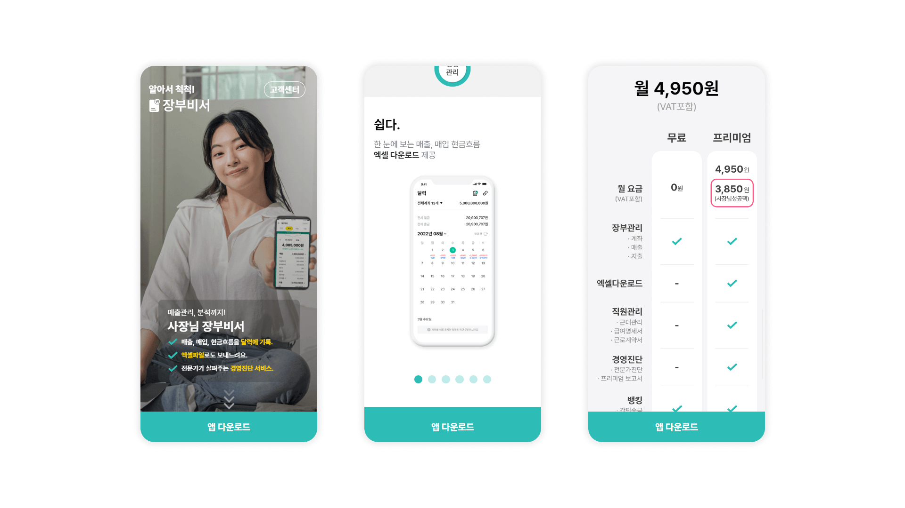

모바일에서도 사용자가 편리하게 볼 수 있게 제작한 사장님 장부비서 모바일용 홈페이지
스크롤 유도를 위한 화살표 애니메이션 및 콘텐츠 높이를 줄이기 위한 슬라이드 활용으로 사용자의 지루함 방지

| 구분 | 기준 | 비고 |
|---|---|---|
| 디바이스 | Mobile(Android/Ios) | |
| 반응형 중단점(Break Point) | Screen Small-Width 360px | |
| HTML 파일명 | index.html |
| 구분 | 폴더명 | 하위폴더 및 파일 | 비고 |
|---|---|---|---|
| HTML 마크업 페이지 | /SEMO1_0/KT_MOB_HP | index.html | |
| HTML Index | index.html | ||
| 공통 CSS 01.(라이브러리) | css/ | jquery.bxslider.css | |
| 업무 CSS. | css/ | main.css | |
| 공통 Font 01. | font/ |
Pretendard-Light.woff2 Pretendard-Regular.woff2 Pretendard-Medium.woff2 Pretendard-Bold.woff2 |
|
| 이미지 리소스 01. | img/ | ||
| UX용 JS 01. | js/ | main.js | |
| UX용 JS 02.(라이브러리) | js/ |
jquery-3.5.1.min.js jquery.bxslider.js |